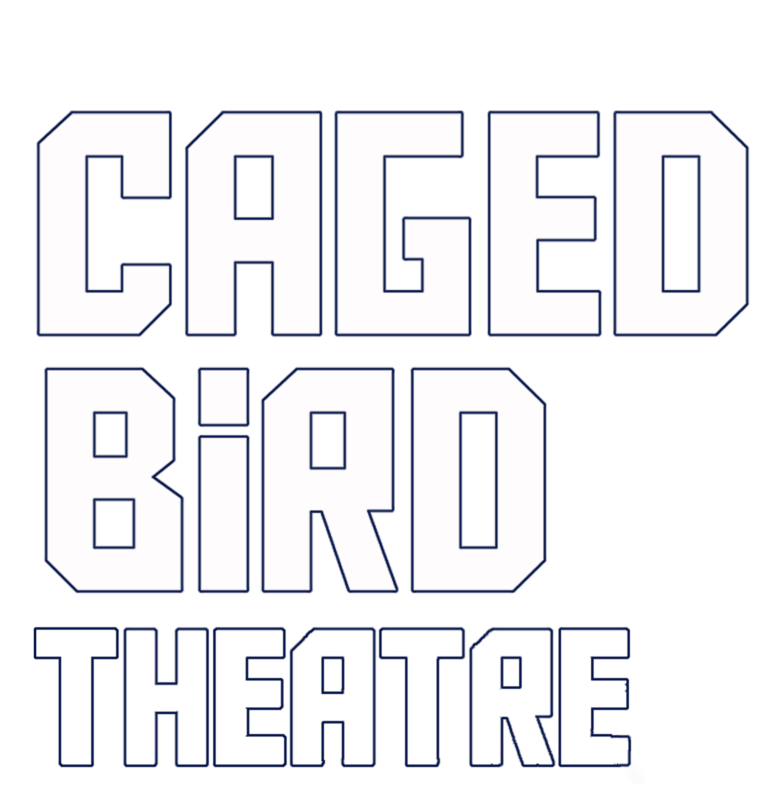
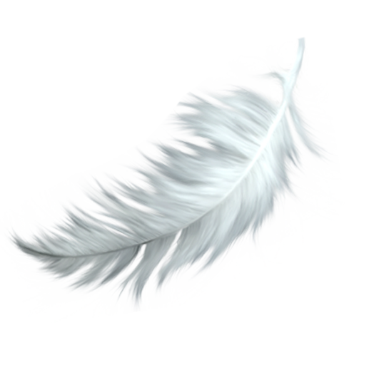
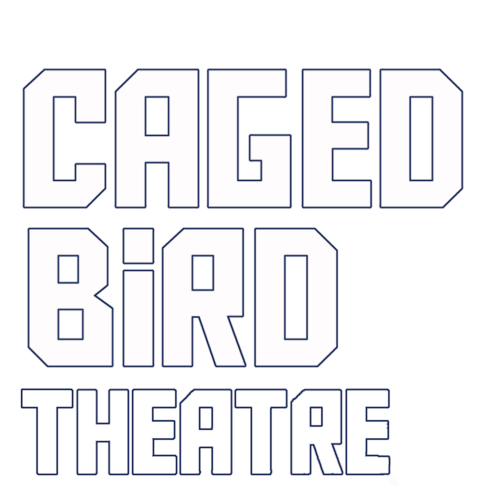
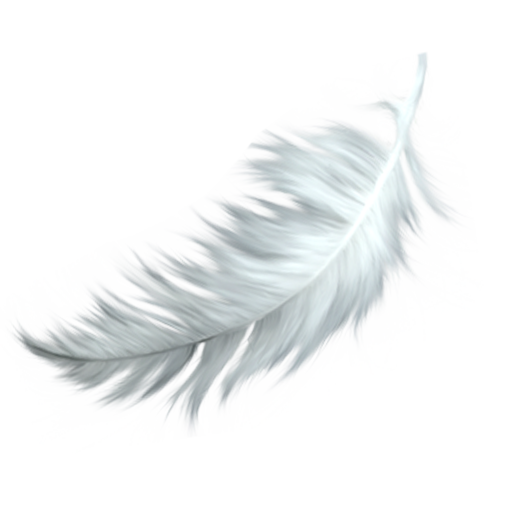

When Jude meets a chap who claims to be God, he seems to just be a deluded recluse. But when one of her patients claims to be having visions of a strange man in his flat, she finds herself caught up in the birth of a new religion. What lies beyond death? What lay before life? And in a world of neon lights and unsettling headlines, why is one of the Old Gods going by John Doe? Hilarious yet morbid, bitter yet warm, Neon is a bold new play that explores loneliness, death and transcendence, and the potential to find faith in the unlikeliest of spaces.
Back to Top